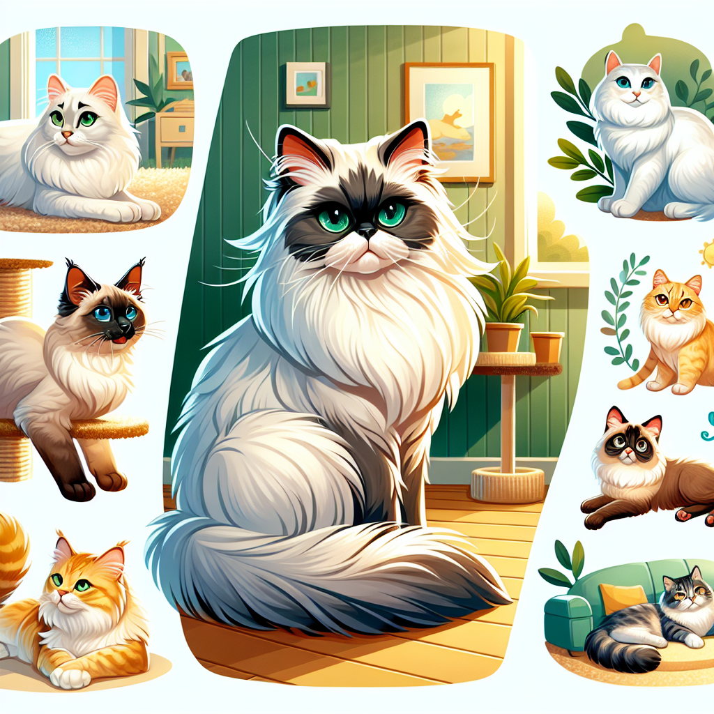

Introduction to Cat Ownership
This lecture provides an overview of what it takes to be a responsible cat owner, covering everything from basic care needs to understanding cat behavior.
Welcome to Cat Ownership
 | Understanding the responsibilityThe joy cats bring into our livesOverview of the lecture content |
Choosing the Right Cat
|  | Considerations: age, breed, personalityAdoption vs. buyingAllergies and living space |
Basic Needs of a Cat
| Nutrition: wet vs. dry foodHydration: importance of fresh waterLitter box training and cleanliness |
Health and Wellness
| Regular veterinary check-upsVaccinations and preventive medicineRecognizing signs of illness |
Understanding Cat Behavior
| Common behaviors and what they meanThe importance of play and exerciseDealing with challenging behaviors |
Creating a Cat-Friendly Home
| Safe spaces and comfortable resting areasScratching posts and cat treesKeeping indoor cats entertained |
Conclusion: The Joy of Cat Ownership
| The lifelong bond between cats and humansResponsibilities and rewardsResources for further learning |